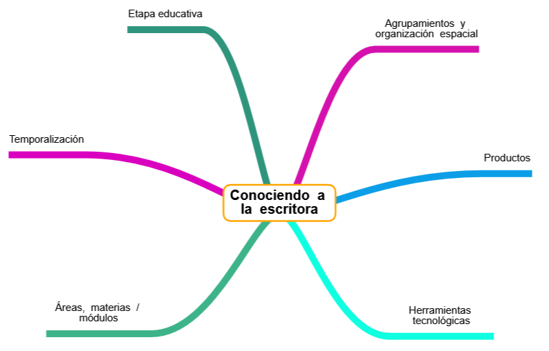

Conociendo a la escritora

{"id":"db9196e8-c53e-48f1-90ed-73175210c275","title":"Conociendo a la escritora","mindmap":{"root":{"id":"e03cc504-3837-4143-833f-c66fb6afafa6","parentId":null,"text":{"caption":"Conociendo a la escritora","font":{"style":"normal","weight":"bold","decoration":"none","size":20,"color":"#000000"}},"offset":{"x":0,"y":0},"foldChildren":false,"branchColor":"#000000","children":[{"id":"3d580323-3ddd-42df-8981-3e4761c66180","parentId":"e03cc504-3837-4143-833f-c66fb6afafa6","text":{"caption":"Etapa educativa","font":{"style":"normal","weight":"normal","decoration":"none","size":15,"color":"#000000"}},"offset":{"x":-220.466650390625,"y":-240.22667236328124},"foldChildren":false,"branchColor":"#2e957c","children":[]},{"id":"3aea5faf-1679-45dc-bc19-43c593796b2f","parentId":"e03cc504-3837-4143-833f-c66fb6afafa6","text":{"caption":"Áreas, materias / módulos","font":{"style":"normal","weight":"normal","decoration":"none","size":15,"color":"#000000"}},"offset":{"x":-338.160009765625,"y":185.77333984375},"foldChildren":false,"branchColor":"#3db389","children":[]},{"id":"c8be54e8-65ad-4c7c-a8d2-430ca89724dc","parentId":"e03cc504-3837-4143-833f-c66fb6afafa6","text":{"caption":"Agrupamientos y organización espacial","font":{"style":"normal","weight":"normal","decoration":"none","size":15,"color":"#000000"}},"offset":{"x":137.439990234375,"y":-226.82667236328126},"foldChildren":false,"branchColor":"#d511ad","children":[]},{"id":"e3170ef0-06e7-48f2-b5b1-a320a2b51fb8","parentId":"e03cc504-3837-4143-833f-c66fb6afafa6","text":{"caption":"Temporalización","font":{"style":"normal","weight":"normal","decoration":"none","size":15,"color":"#000000"}},"offset":{"x":-392.6666625976562,"y":-58.7066650390625},"foldChildren":false,"branchColor":"#d900bf","children":[]},{"id":"a765d10a-953f-4fb8-ad75-ebdf09c69fab","parentId":"e03cc504-3837-4143-833f-c66fb6afafa6","text":{"caption":"Productos","font":{"style":"normal","weight":"normal","decoration":"none","size":15,"color":"#000000"}},"offset":{"x":294.3599609375,"y":-31.42667236328125},"foldChildren":false,"branchColor":"#0c9fe8","children":[]},{"id":"448a530b-551f-4d12-b216-294569f466d2","parentId":"e03cc504-3837-4143-833f-c66fb6afafa6","text":{"caption":"Herramientas tecnológicas","font":{"style":"normal","weight":"normal","decoration":"none","size":15,"color":"#000000"}},"offset":{"x":158.8,"y":189.42666015625},"foldChildren":false,"branchColor":"#0fffe1","children":[]}]}},"dates":{"created":1774009805358,"modified":1774009988718},"dimensions":{"x":4000,"y":2000},"autosave":false}